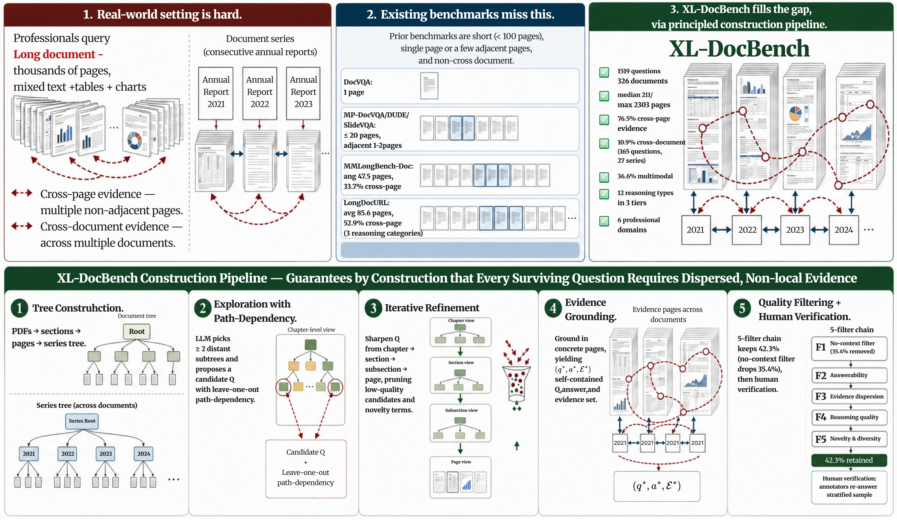
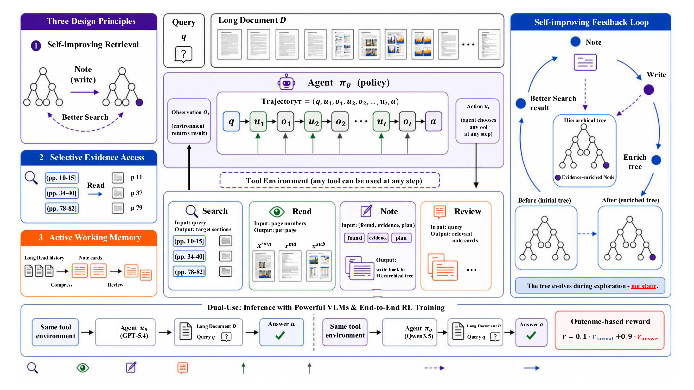

Generate environments
Build professional settings with roles, working materials, shared services, and explicit boundaries on what each participant can see and do.
A research program for knowledge-work agents
Environments, data, and learning
for work that continues.
Knowledge work moves between words, numbers, images, sound, and spatial models. Our vision is for agents that can research, create, analyze, and coordinate across tools and teams, turning ideas into useful work and building on what came before.
Research in progress
We are developing persistent, role-based environments where new assignments arise from ongoing professional activity. Requests lead to working files; review leads to revisions; accepted work becomes context for the next assignment.
The goal is to connect realistic work generation with agent evaluation and learning. Responsibilities, access permissions, shared materials, and unresolved decisions are part of the environment, not just extra text in a prompt.
Build professional settings with roles, working materials, shared services, and explicit boundaries on what each participant can see and do.
Connect requests, authorized context, work products, and review feedback into resources for supervised learning and on-policy improvement.
Assess the submitted artifact and observable outcome: accuracy, completeness, usability, source traceability, and issues that remain unresolved.
Work & deliverables
A proposal can become a financial model, a slide deck, a visual concept, or a working prototype. Our research vision connects these forms of work, including the reasoning, collaboration, and review that make them useful to the next person.
Research a question, draft a proposal, compare contract versions, or maintain a team knowledge base. Keep the writing connected to its sources, decisions, and revisions.
Word / DOCX / PDF / Markdown
Reconcile accounts, plan budgets, forecast cash flow, and compare business scenarios. Keep formulas, assumptions, charts, and source records consistent in editable workbooks.
Excel / XLSX / CSV / structured data
Build a research talk, pitch deck, lesson, or board briefing. Connect narrative, layout, charts, and supporting evidence, then revise the presentation for its audience.
PowerPoint / PPTX / presentations
Develop brand assets, illustrations, interface layouts, diagrams, and campaign imagery. Carry a creative brief through exploration, editing, accessibility checks, and production handoff.
Images / layouts / diagrams / editable design assets
Move from scripts and storyboards to edited clips, motion graphics, voiceovers, and sound. Align timelines, captions, transcripts, and review notes across a production.
Video / audio / animation / subtitles / timelines
Explore product concepts, spatial layouts, and engineering alternatives. Connect models and drawings to dimensions, simulations, bills of materials, and technical review.
3D scenes / CAD / STEP / BIM / drawings / BOM
Clean and join data, investigate trends, build dashboards, and assemble evidence-backed reports. Make findings reproducible and uncertainty visible to the people making decisions.
SQL / datasets / dashboards / reports / evidence
Build a prototype, update an application, connect APIs, or automate a recurring workflow. Deliver working changes with tests, reproducible environments, and maintainable documentation.
Code / scripts / tests / configurations
Prepare meetings, draft correspondence, coordinate calendars, and turn discussions into plans. Keep owners, dependencies, approvals, and follow-up work connected across a team.
Email / chat / calendars / minutes / project plans
These are directions for our research, not a fixed capability list. The ambition is useful, reviewable work across formats, professions, and the tools people already use.
Professional settings
From design studios and finance teams to engineering, research, and everyday operations, our vision spans the settings where people turn knowledge into action. Each brings its own materials, constraints, handoffs, and standards of quality.
Illustrative work
Connect operating records to editable analyses and explain what the evidence can, and cannot, support.
Simulation does not authorize real-world financial, legal, clinical, or operational decisions. Professional review and permission boundaries remain part of the work.
Public research
Our public work studies how agents gather and use document evidence, and how their understanding can be evaluated.

Benchmark · 202601 / BENCHMARK
Evidence-grounded reasoning across hundreds or thousands of pages, with 1,519 human-verified questions and exact page-level support.

Agent system · 202602 / AGENT SYSTEM
Long-document understanding as mutable-state interaction through Search, Read, Note, Review, and end-to-end reinforcement learning.